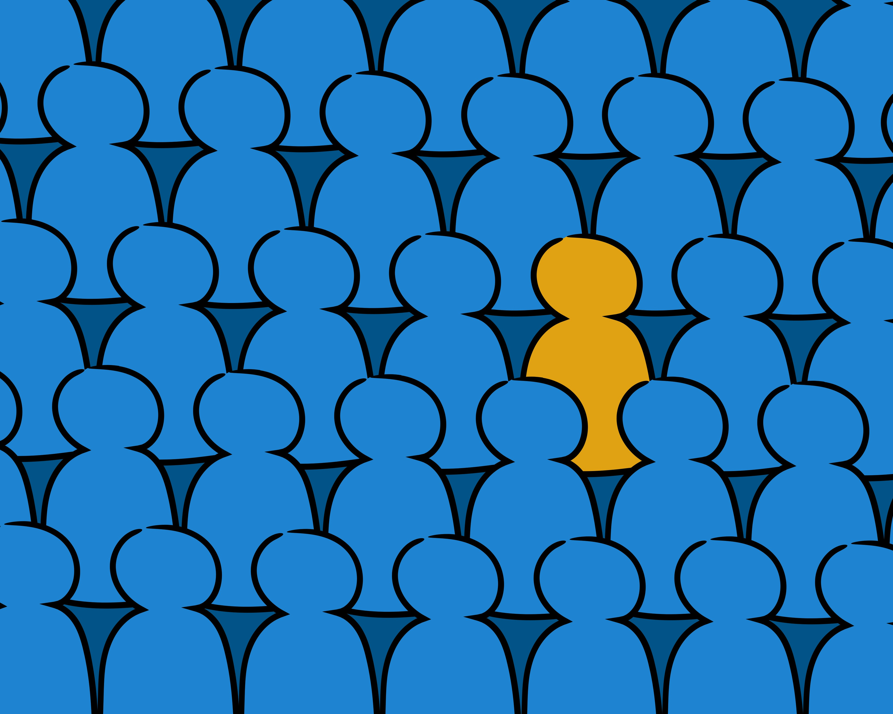
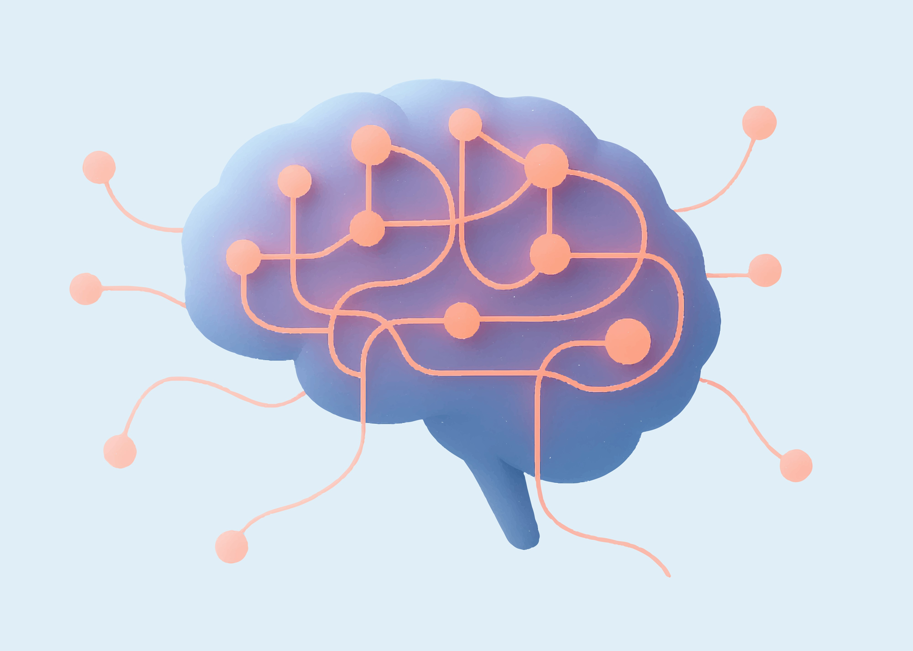
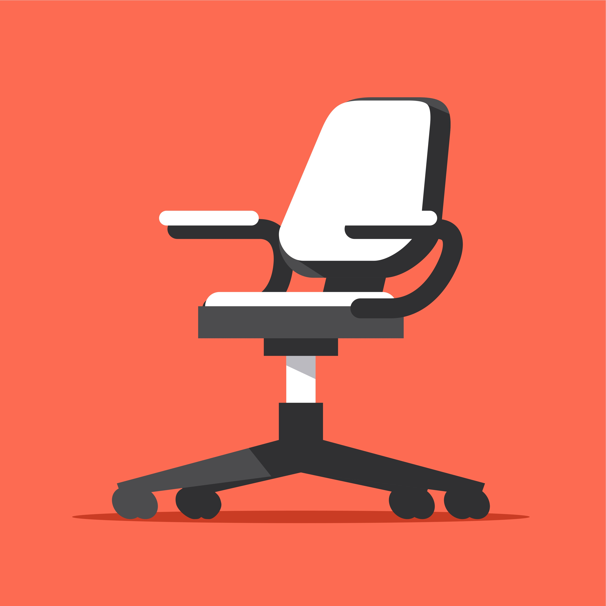
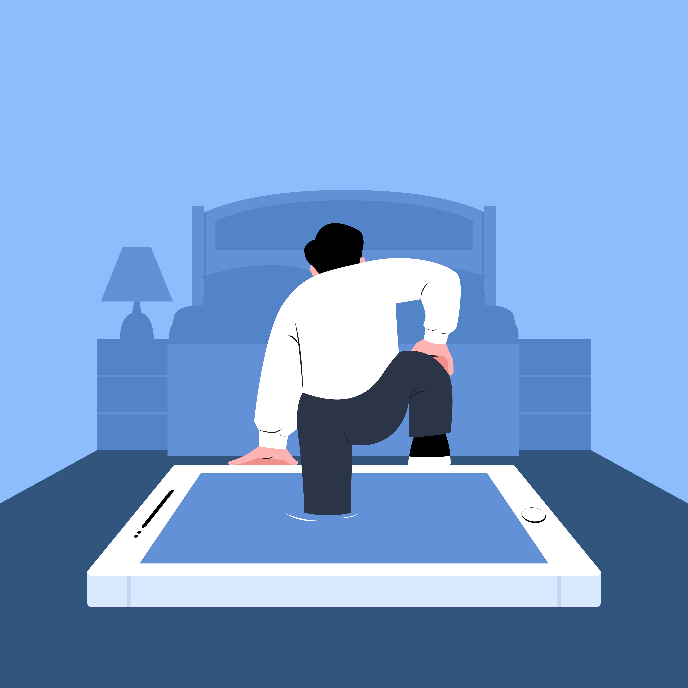

Это было самое начало пути. На этом этапе важно было проникнуться основами и настроиться на учёбу. И, возможно, подумать, как новые знания могут повлиять на ваше будущее.
Начало было захватывающим: фритрек такой объемный, что же будет дальше - в спринтах? Сериалы и прочую смещенную активность пришлось свести к минимуму. Уже хорошо. Если так пойдет и дальше, то можно и о будущем будет подумать!
1 спринт: Я — чистый лист

<Где я и кто?>
На первых этапах мы работали со страхами и сомнениями, которые часто испытывают новички. Один из них — страх перед чистым листом. Это, конечно же, намного сложнее, чем боязнь куска бумаги. Часто за этим ощущением скрываются более глубокие вопросы: с чего начать? а вдруг будет слишком сложно? что, если я не справлюсь?
Смогу ли я овладеть знаниями, которые очень хрупко связаны с предметным миром? Или так и останусь чистым листом? Но практика, и еще раз практика - и на сомнения нет времени.
1 спринт: А если не получится?

<Включение>
Первый проект — позади! Но это всё ещё самое начало пути. Радость могла быстро померкнуть и смениться ожиданием провала. Или вы, наоборот, могли вдохновиться успехами и поверить в себя.
Кажется, мой мозг зашевелился. Гриды абсолютно спозиционированы в ГитХабе?! Спасибо чувству юмора разработчиков курса. Оно мне надо.
2 спринт: Погоня за идеалом
<Погружаемся глубже?!>
На этом этапе вы уже достаточно разбирались в основах вёрстки, чтобы понять, как много ещё впереди. Вы могли попытаться погнаться за идеалом и понять, что он недостижим. А, может, вы вовсе и не подвержены перфекционизму и вместо того, чтобы сделать идеально, старались просто сделать.
Чем больше тем пройдено, тем больше хочется углубиться в каждую из них, актуализировать и синхронизировать абсолютно все, обнаруживаемые в голове, артефакты. В итоге часть материала пришлось "просто сделать". Часто это решение оказывается и самым правильным.
2 спринт: О тех, кто рядом
<Точка опоры>
Всё это время вы были не одиноки (хотя, возможно, иногда и чувствовали, что одни против целого мира). Вас окружали одногруппники, команда сопровождения и просто близкие люди, которым можно пожаловаться, если очередной макет просто так не поддавался. Осваивать что-то новое легче, когда рядом есть единомышленники, не правда ли?
Сессии с наставником, даже в записи, очень воодушевляют. И как можно чувствовать себя одиноким в бескрайних просторах кем-то созданных технологий?!
3 спринт: Обходные стратегии

<Пауза>
На этом курсе вы постоянно решали разные задачи. В какой-то момент вам могло показаться, что решения просто иссякли. Значит, пришло время посмотреть на задачу под другим углом.
Перерыв?! Новогодние праздники? Столько дополнительного времени к обучению, можно закончить курс раньше срока! Но правда стара как мир: делу - время, потехе - час. Иначе полный расфокус.
3 спринт: Когда опускаются руки

<Спим или дальше плаваем?>
Во время учёбы часто возникает чувство, когда не знаешь, за что хвататься. Вроде и проектную пора сдавать, и задачи хочется порешать, и в теории получше разобраться, и жизнь не забыть пожить. В такие моменты очень нужна концентрация. Вспомните, откуда вы её черпали.
Уделяю дополнительное внимание поддержке привычного уровня физической активности. Верстка проникла в мои сновидения, значит эта любовь на всю жизнь.
«Сейчас я здесь»
<Дорогу осилит идущий>
Сейчас вы уже очень много знаете о вёрстке. Но это только начало. Во-первых, впереди ещё много материала про «красотищу». Во-вторых, с окончанием курса учёба не заканчивается. Вёрстка — это целый мир. И этот мир постоянно меняется. Познать его полностью не получится, но это тот случай, когда важен сам процесс познания. Ведь часто путь — и есть результат.
Впереди много интересной работы. К синдрому самозванца, как оказалось, довольно быстро адаптируешься. Здравствуй Даннинг-Крюгер.
![Иллюстрация фрагмента компьютерной клавиатуры. Центральное место занимает большая клавиша с надписью «Enter», которая выделена и изображена под углом, будто приподнята или «выскакивает» из плоскости клавиатуры. На клавише также присутствует зелёная стрелка, указывающая вниз, что подчёркивает её функцию подтверждения или выполнения действия. Под клавишей «Enter» заметен ярко-зелёный элемент, напоминающий ступеньки или платформу, что может символизировать «шаг вперёд» или выполнение команды при нажатии этой клавиши.](./images/kraken-marten-ydKvYVH1xbI-unsplash.jpg)